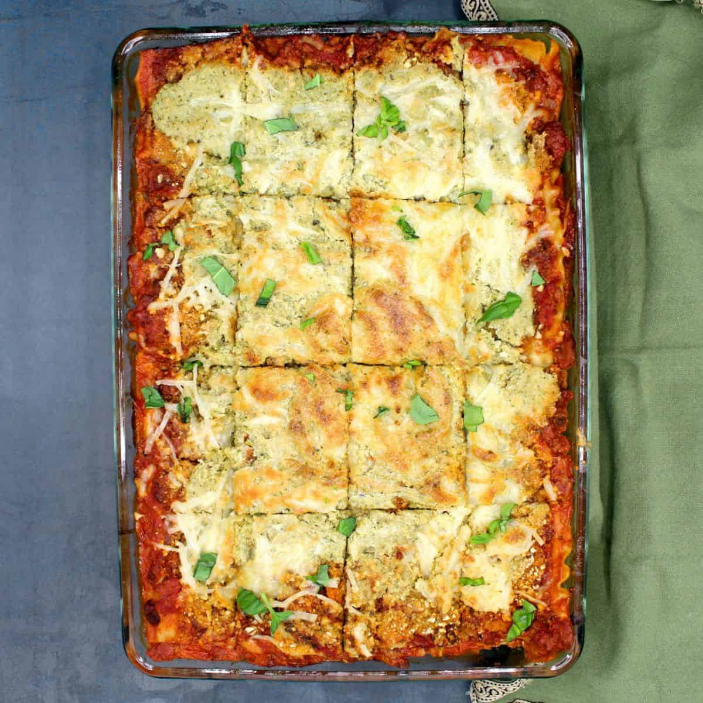

Vegan Lasagna Recipe

Description
Scrumptious lasagna. You wont even know it's vegan.
Ingredients
- 1 package of lasagna noodles
- a few jars of sauce
- Mokoyo vegan mozzarella cheese
- Violife parmesan cheese
- Violife Mozzarella Shreds (or any other vegan cheese you'd like)
- Pack of Beyond Sausage
- Pack of Beyond Ground "Beef"
Steps
- Boil water and cook noodles according to its package instructions
- Cook meat according to package instructions
- Preheat oven to 350 degrees Farenheit
- In oven-safe glass 13" x 9" baking disk, begin layering the ingredients in this order:
sauce - meat - noodles - cheese
- Continue layering in that order until all ingredients have been used
- Place in oven for 25 minutes, or until all cheese is completely melted.
- When almost finished, broil the top until cheese has reached desired texture
- Allow to cool for a while and enjoy!